オーストラリア・内陸部
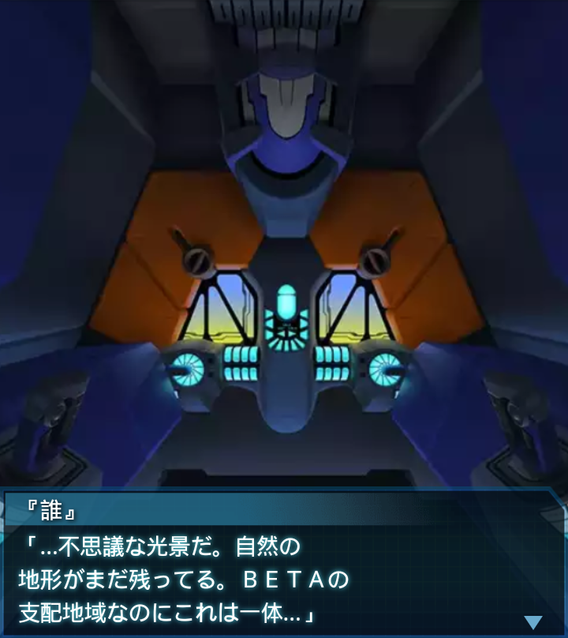
『誰』
「…不思議な光景だ。自然の
地形がまだ残ってる。ＢＥＴＡの
支配地域なのにこれは一体…」
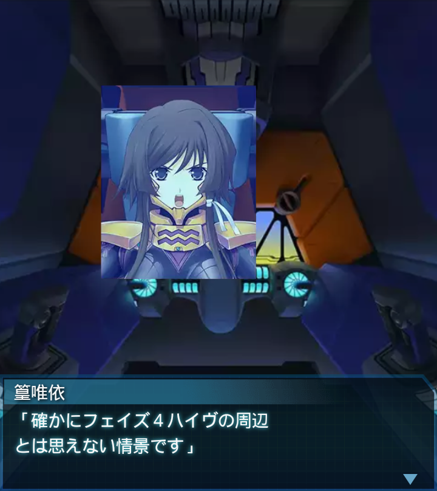
篁唯依
「確かにフェイズ４ハイヴの周辺
とは思えない情景です」
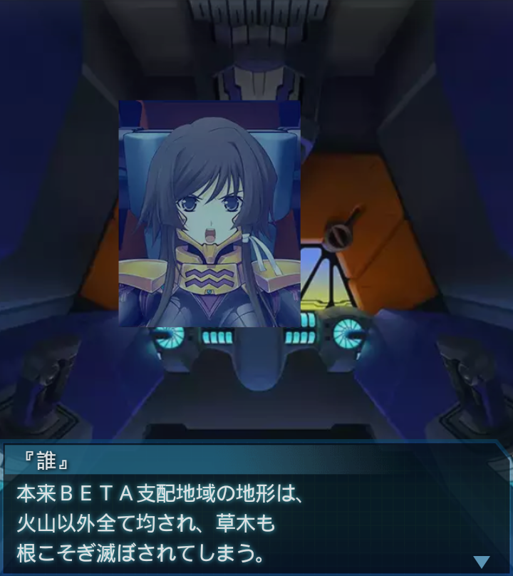
『誰』
本来ＢＥＴＡ支配地域の地形は、
火山以外全て均され、草木も
根こそぎ滅ぼされてしまう。
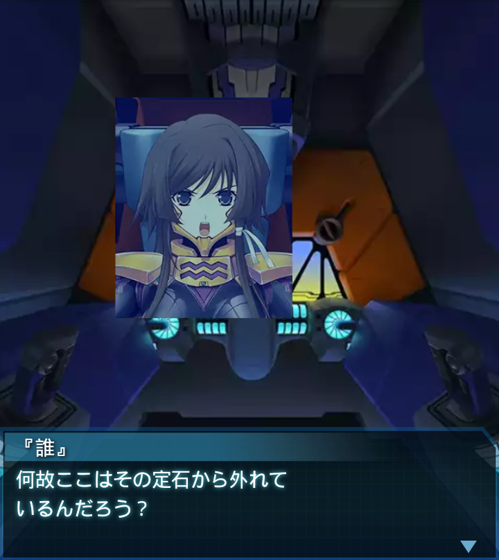
『誰』
何故ここはその定石から外れて
いるんだろう？
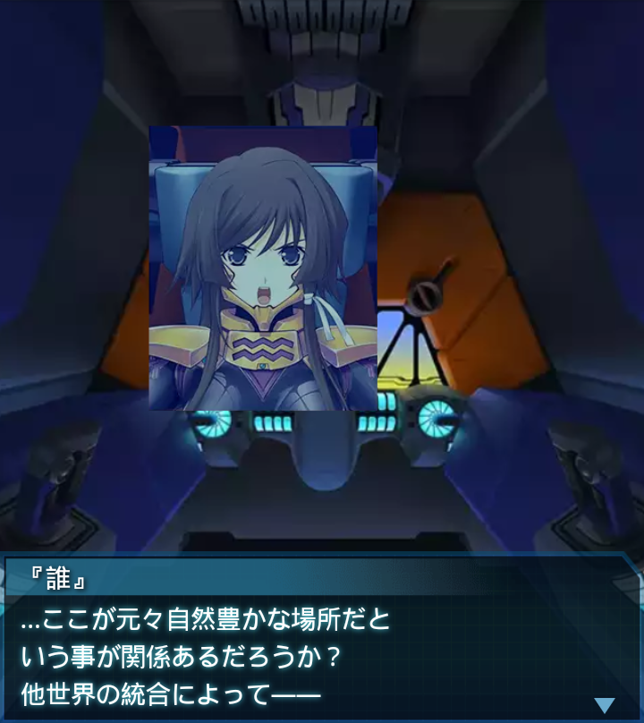
『誰』
…ここが元々自然豊かな場所だと
いう事が関係あるだろうか？
他世界の統合によって――
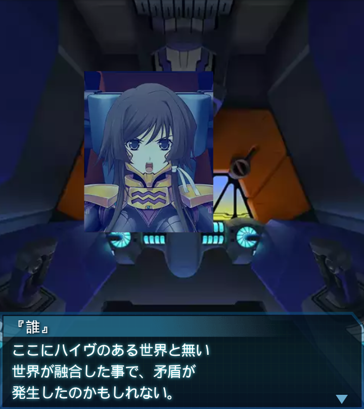
『誰』
ここにハイヴのある世界と無い
世界が融合した事で、矛盾が
発生したのかもしれない。
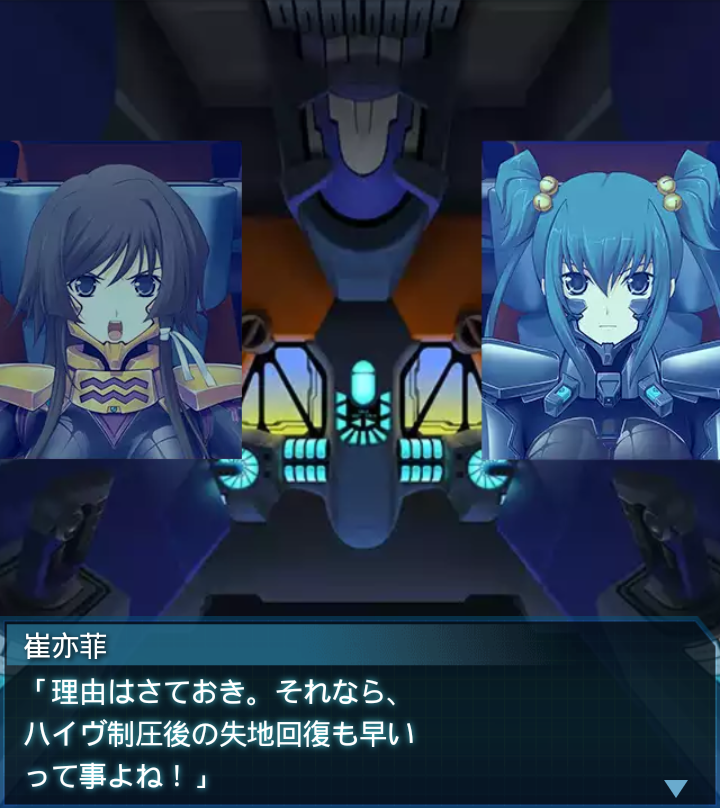
崔亦菲
「理由はさておき。それなら、
ハイヴ制圧後の失地回復も早い
って事よね！」
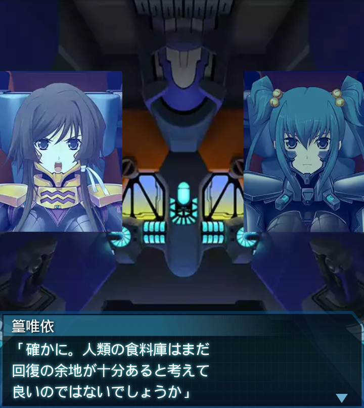
篁唯依
「確かに。人類の食料庫はまだ
回復の余地が十分あると考えて
良いのではないでしょうか」
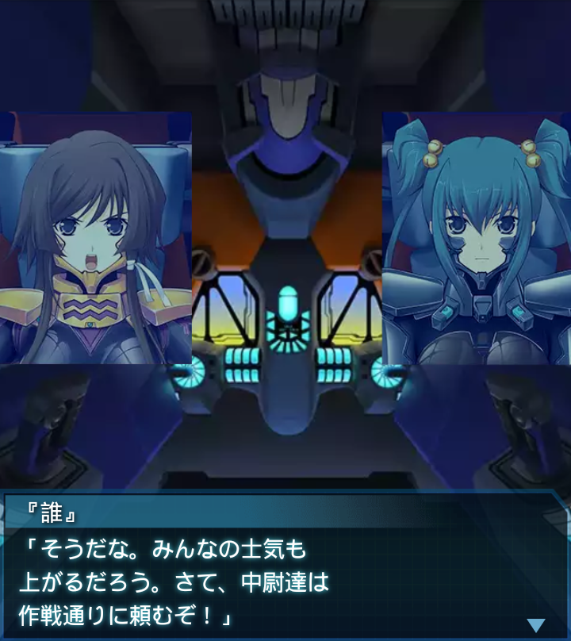
『誰』
「そうだな。みんなの士気も
上がるだろう。さて、中尉達は
作戦通りに頼むぞ！」
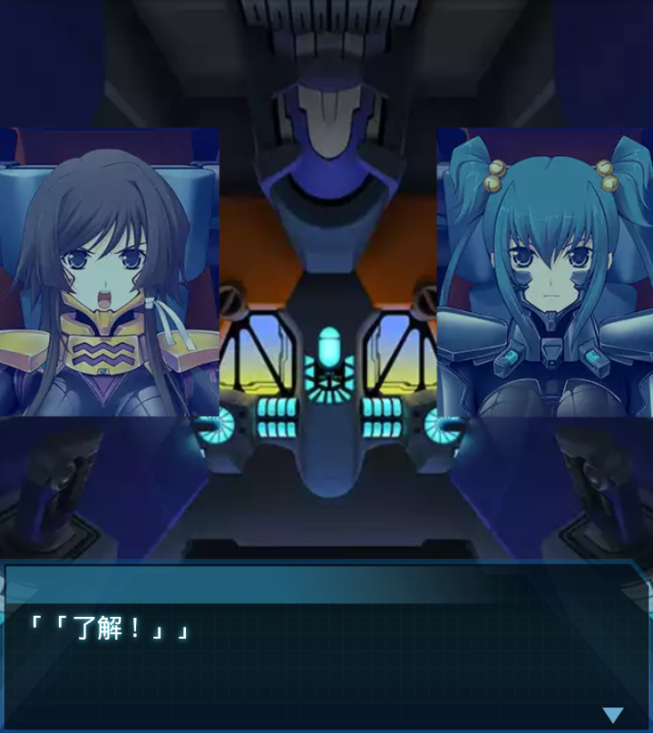
「「了解！」」
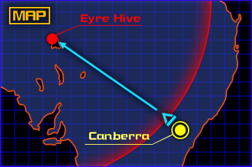
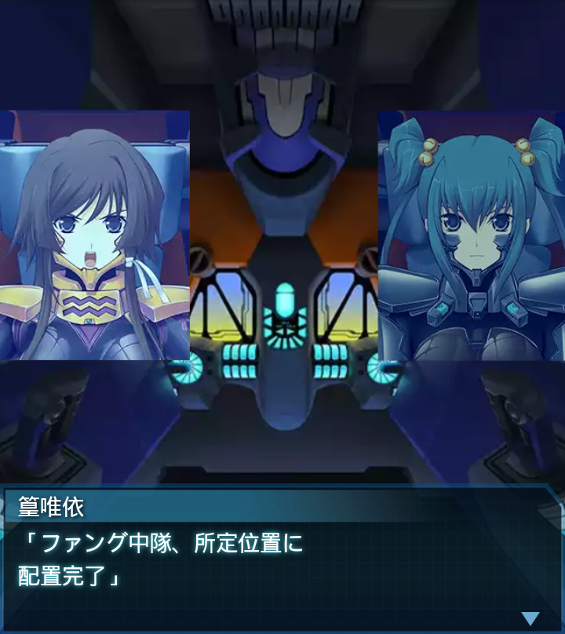
篁唯依
「ファング中隊、所定位置に
配置完了」
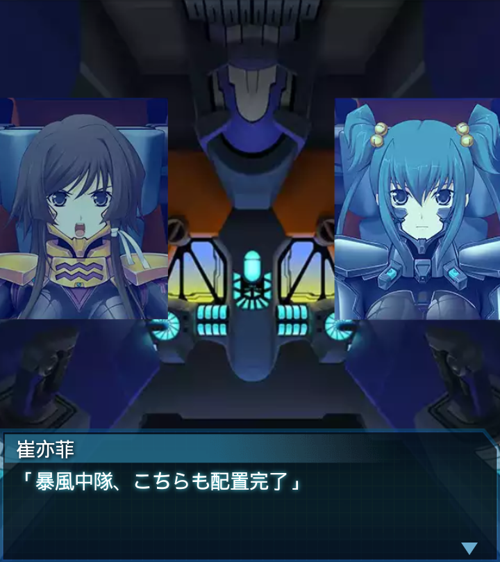
崔亦菲
「暴風中隊、こちらも配置完了」
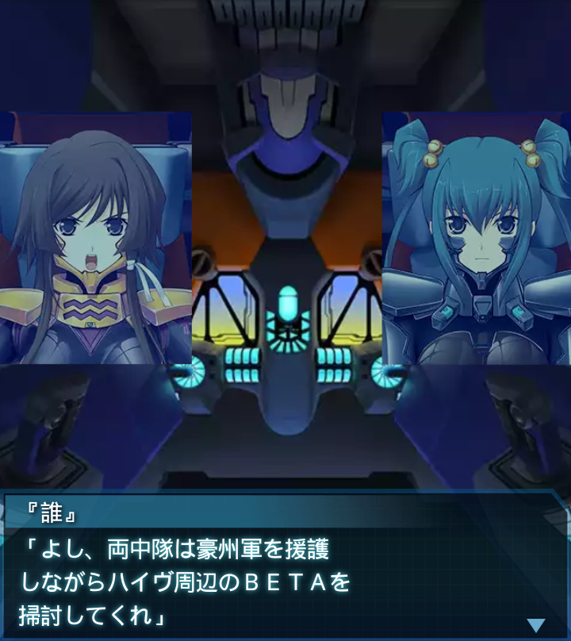
『誰』
「よし、両中隊は豪州軍を援護
しながらハイヴ周辺のＢＥＴＡを
掃討してくれ」
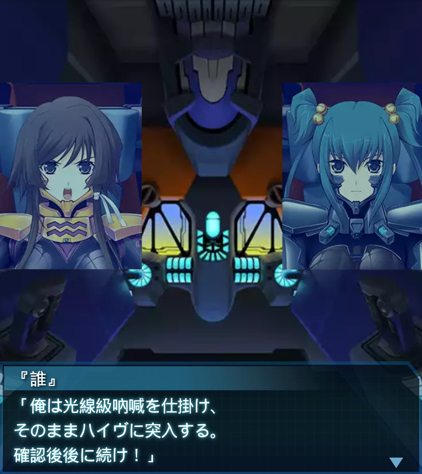
『誰』
「俺は光線級吶喊を仕掛け、
そのままハイヴに突入する。
確認後後に続け！」
「「了解！」」
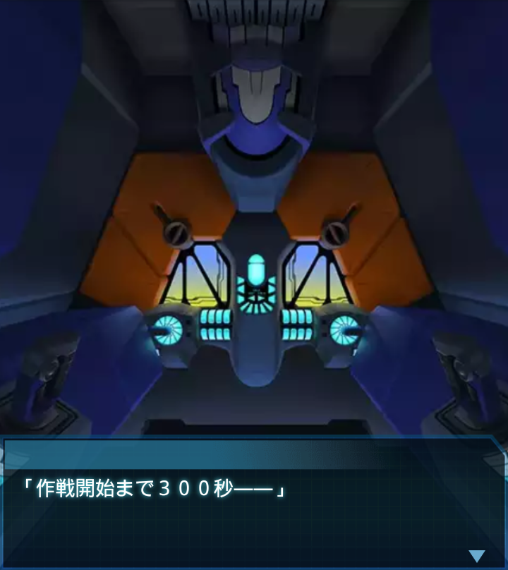
「作戦開始まで３００秒――」
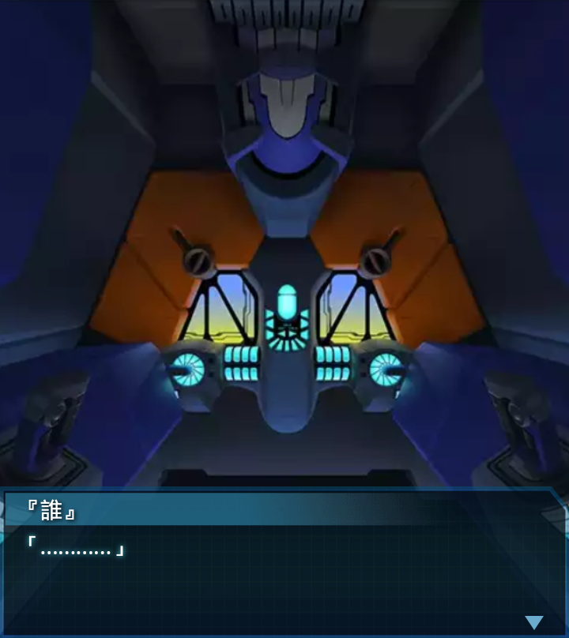
『誰』
「…………」